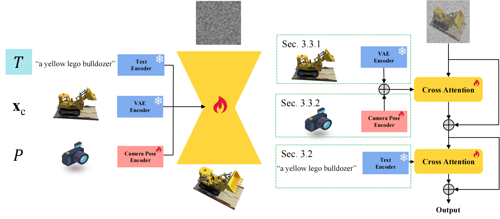

1Tsinghua University 2Hong Kong University of Science and Technology 3International Digital Economy Academy
In this paper, we present TOSS, which introduces text to the task of novel view synthesis (NVS) from just a single RGB image. While Zero-1-to-3 has demonstrated impressive zero-shot open-set NVS capability, it treats NVS as a pure image-to-image translation problem. This approach suffers from the challengingly under-constrained nature of single-view NVS: the process lacks means of explicit user control and often results in implausible NVS generations. To address this limitation, TOSS uses text as high-level semantic information to constrain the NVS solution space. TOSS fine-tunes text-to-image Stable Diffusion pre-trained on large-scale text-image pairs and introduces modules specifically tailored to image and camera pose conditioning, as well as dedicated training for pose correctness and preservation of fine details. Comprehensive experiments are conducted with results showing that our proposed TOSS outperforms Zero-1-to-3 with more plausible, controllable and multiview-consistent NVS results. We further support these results with comprehensive ablations that underscore the effectiveness and potential of the introduced semantic guidance and architecture design.
The pipeline of TOSS (Left) and our conditioning mechanisms (Right).
Comparing previous image conditioning mechanisms (a-b) and TOSS (c).
Quantitative comparison of single-view novel view synthesis on GSO and RTMV.
3D consistency scores on GSO and RTMV.
Qualitative comparison of single-view NVS, on GSO (Left) and RTMV (Right).
NVS examples using TOSS on Synthetic NeRF dataset.
Random sampled novel views using TOSS.
Quantitative comparison of single-view 3D reconstruction on GSO and RTMV.
Qualitative comparison of 3D reconstruction on GSO and RTMV.
3D generation results based on in-the-wild images.
@article{
}